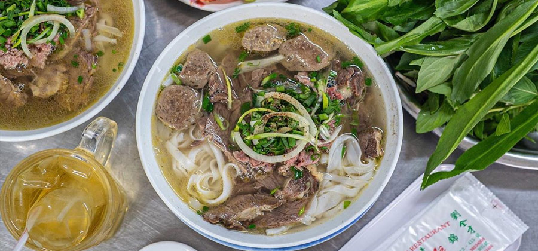
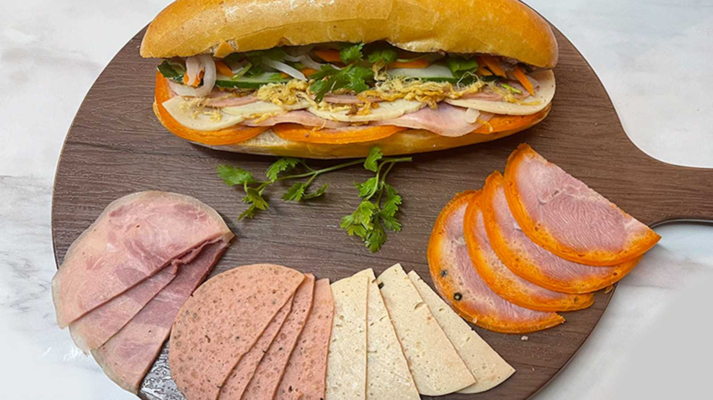
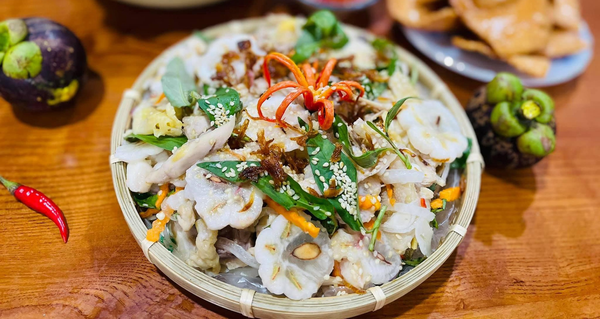
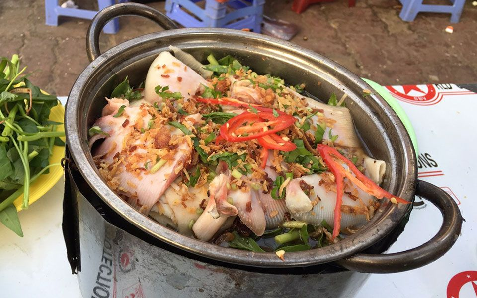

GIỚI THIỆU ẨM THỰC Thành phố Hồ Chí Minh
Thành phố Hồ Chí Minh là nơi giao thoa ẩm thực của nhiều vùng miền, tạo nên một thành phố có sự đa dạng về lựa chọn đặc sản. Đó là tổng hòa của các luồng văn hóa, tạo nên một bản sắc rất riêng: đa dạng, phong phú, đậm chất đường phố và có tính giao thoa cao. Điều này càng trở nên rõ ràng hơn khi thành phố Hồ Chí Minh được sáp nhập với tỉnh Bình Dương và Tỉnh Bà Rịa-Vũng Tàu. Thành phố Hồ Chí Minh mới không chỉ là nơi giao thương mà còn là nơi sản sinh và bảo tồn các đặc sản địa phương.
Đặc sản Sài Gòn
1.Cơm tấm

Được nấu từ hạt gạo bị vỡ, tạo nên món cơm có hạt nhỏ, dẻo và thơm đặc trưng. Cơm tấm thường được ăn kèm chung với sườn nướng, bì, chả trứng, và nước mắm chua ngọt. Ban đầu, cơm tấm là món ăn sáng của tầng lớp lao động nghèo vì chi phí rẻ và dễ chế biến. Theo thời gian, cơm tấm đã trở thành món ăn đặc trưng của Sài Gòn, thể hiện sự sáng tạo và tinh tế trong ẩm thực Việt Nam.Món ăn này có mặt ở nhiều địa điểm, từ các quán ăn lề đường bình dân cho đến những nhà hàng sang trọng, phản ánh sự thay đổi về ẩm thực và kinh tế. Cơm tấm không chỉ là món ăn mà còn là biểu tượng văn hóa, thể hiện sự đa dạng và phong phú của ẩm thực Sài Gòn.
Giới thiệu Quán:
- Cơm tấm Mười: Số 294/35 Đ. Xô Viết Nghệ Tĩnh, TP. Hồ Chí Minh
- Cơm tấm Cô Phượng: Số 241/8 Đ. Bến Vân Đồn, TP. Hồ Chí Minh
- Cơm tấm Hoà:Số 415 Đ. Hậu Giang, TP. Hồ Chí Minh.
2.Phở Sài Gòn

Là phiên bản phở có hương vị đậm đà, ngọt thanh và nhiều màu sắc hơn phở Bắc, với nước dùng thường có màu hơi đục hơn, được nêm nếm ngọt hơn và có thể thêm các gia vị như mực khô hoặc hành gừng nướng. Phở Sài Gòn đặc trưng bởi phần thịt bò đa dạng các loại như nạm, gầu, gân, cùng với các loại rau sống ăn kèm như húng quế, ngò gai, giá đỗ và một chén nước béo riêng cho người thích. Ngoài ra cũng có thể ăn kèm với tương đen, tương ớt, chanh, ớt sừng xắt miếng, sa tế, tiêu, và đôi khi là ớt xay.
Giới thiệu Quán:
- Phở Hùng – quán phở Sài Gòn được Michelin đề xuất: 241 Đ. Nguyễn Trãi và 288 Đ. Nguyễn Tri Phương, TP. Hồ Chí Minh.
- Phở Cao Vân - quán phở có tuổi đời hơn 60 năm:Số 25 Đ. Mạc Đĩnh Chi, TP. Hồ Chí Minh
- Phở Minh: 63/6 Đ. Pasteur, TP. Hồ Chí Minh.
3.Hủ Tiếu Nam Vang

Món ăn phổ biến với nước dùng đậm đà, sợi hủ tiếu dai. Bắt nguồn từ Campuchia (Phnom Penh), được chế biến lại cho phù hợp với khẩu vị người Việt. Nước dùng được ninh từ xương ống, mực khô, tôm khô, có vị thanh ngọt đặc trưng. Có nhiều cách lựa chọn đồ ăn kèm với Hủ Tiếu Nam Vang như tôm, thịt băm, gan heo, lòng heo, tim, thịt băm, trứng cút, cua, mực... tùy theo yêu cầu của khách. Có hai loại chính là hủ tiếu nước (chan ngập nước lèo) và hủ tiếu khô (trộn với nước sốt sền sệt).
Giới thiệu Quán:
- Hủ tiếu Nam Vang Nhân Quán: 122D, TP. Hồ Chí Minh và A23/9 QL50, TP. Hồ Chí Minh.
- Quán Ngọc Nhung:534 Nguyễn Thái Sơn, TP. Hồ Chí Minh
- Quán Trung Còi: 80 Cao Thắng, TP. Hồ Chí Minh.
4.Hủ Tiếu Gõ

Món ăn phổ biến với nước dùng đậm đà, sợi hủ tiếu dai. Là một hình thức bán hàng di động, không phải là tên gọi của món ăn cụ thể. Bắt nguồn từ các tỉnh miền Tây, được du nhập và phổ biến tại các đô thị. Người bán sử dụng tiếng gõ hai thanh tre hoặc kim loại để báo hiệu, tìm khách ở các ngõ hẻm. Người bán có xe đẩy ở một chỗ cố định hoặc di chuyển bằng xe máy, xe đạp để giao hàng tận nơi. Thường là các loại hủ tiếu bình dân như hủ tiếu bò viên, hủ tiếu thập cẩm. Nước dùng được ninh từ xương ống, mực khô, tôm khô, có vị thanh ngọt đặc trưng.
Giới thiệu Quán:
- Hủ tiếu gõ Phạm Văn Hai: 154/56 Phạm Văn Hai, TP. Hồ Chí Minh.
- Quán hủ tiếu gõ Lý Thái Tổ:18 Lý Thái Tổ, TP. Hồ Chí Minh
- Quán hủ tiếu vỉa hè Quận 10 cũ: hẻm 449 Bà Hạt, TP. Hồ Chí Minh.
- Hủ tiếu gõ Sài Gòn sau cây xăng Lê Quang Định:Lê Quang Định, TP. Hồ Chí Minh.
- Hủ tiếu gõ 52 Trần Hưng Đạo: 52 Trần Hưng Đạo, TP. Hồ Chí Minh.
5. Bánh Mì Sài Gòn

Là món ăn biểu tượng văn hóa ẩm thực của thành phố, với nguồn gốc từ baguette của Pháp nhưng được biến tấu để mang đậm nét Việt Nam. Món ăn này nổi tiếng với lớp vỏ giòn, ruột mềm và nhân đa dạng, kết hợp giữa ẩm thực phương Tây và phương Đông. Bánh mì Sài Gòn không chỉ là món ăn tiện lợi và bình dân mà còn là biểu tượng ẩm thực được vinh danh trên toàn thế giới. Đặc biệt nổi tiếng với các phiên bản như Bánh mì Bì, Bánh mì Xíu mại, Bánh mì Thịt nướng, hay Bánh mì Chả lụa.
Giới thiệu Quán:
- Bánh mì Bảy Hổ: 19 Đ. Huỳnh Khương Ninh và số 148 Đ. Nguyễn Văn Thủ, TP. Hồ Chí Minh.
- Bánh mì Huỳnh Hoa:Số 26 – 30 – 32 Đ. Lê Thị Riêng, TP. Hồ Chí Minh
- Bánh mì Bà Huynh: Số 185K Đ. Cống Quỳnh, TP. Hồ Chí Minh.
Đặc sản Bình Dương
1.Gỏi Gà Măng Cụt Lái Thiêu

Là một món ăn đặc sản nổi tiếng của vùng đất Lái Thiêu, tỉnh Bình Dương, được làm từ thịt gà dai ngọt và măng cụt xanh giòn chua. Món gỏi "theo mùa" độc đáo, kết hợp vị giòn ngọt thanh mát của măng cụt vừa ửng chín với thịt gà xé phay. Gà ta luộc chín, xé nhỏ, có vị dai ngọt tự nhiên. Loại măng cụt còn vỏ xanh hoặc chỉ hơi chuyển vàng, có vị chua giòn chứ không ngọt mềm. Măng cụt sống có độ giòn và chua đặc trưng, được gọt vỏ cẩn thận. Nước xốt chua ngọt được pha chế tỉ mỉ, đậm đà, giúp các nguyên liệu hòa quyện với nhau. Thường được ăn kèm với các món như bánh phồng tôm, muối tiêu tắc, cháo nấm rơm, làm tăng thêm sự hấp dẫn cho món gỏi. Năm 2022, gỏi gà măng cụt được công nhận là món ăn đặc sản của Bình Dương.
Giới thiệu Quán:
- Chiều Nay Quán: 1045 Lê Hồng Phong, Thủ Dầu Một, Bình Dương.
- Vườn Xưa Quán: An Thạnh N12, An Thạnh, Thuận An, Bình Dương
- Vườn Măng Bình Nhâm:Đường Bình Nhâm 81, KP. Bình Đức, thành phố Thủ Dầu Một, Bình Dương.
2. Bò Nhúng Mắm Ruốc

Là một món lẩu đặc sản phổ biến, nổi tiếng ở Bình Dương và có nguồn gốc từ miền Trung, với sự kết hợp hài hòa giữa thịt bò mềm ngọt và hương vị đặc trưng, đậm đà của mắm ruốc. Nước dùng lẩu được nấu từ mắm ruốc, thường thêm sả, dứa, nước cốt dừa hoặc 7Up, tạo nên hương vị thơm nồng, chua ngọt. Món này thường ăn kèm với bún, bánh tráng và nhiều loại rau sống như đọt bí, rau muống, kèo nèo, tần ô. Hương vị thì đậm đà, thơm nồng mùi mắm ruốc, kết hợp với vị ngọt tự nhiên của thịt bò và sự thanh mát của rau ăn kèm. Nồi nước dùng có vị đặc trưng của mắm ruốc, sả, thường được tăng thêm hương vị chua ngọt từ dứa, nước dừa hoặc nước ngọt như 7UP. Sử dụng thịt bò tươi, thái lát mỏng để khi nhúng vào nồi lẩu chín nhanh, mềm và thấm đẫm gia vị. Đa dạng với bún, bánh tráng, và các loại rau như rau muống, đọt bí, rau đắng, kèo nèo, tần ô, giúp cân bằng hương vị món ăn.
Giới thiệu Quán:
- Lẩu bò mắm ruốc 8 còn: 720 Nguyễn Tri Phương, Thủ Dầu Một, Bình Dương.
- Lẩu bò nhúng mắm ruốc 1988: Đình Thần, Thủ Dầu Một, Bình Dương.
- Quán ăn Thanh Tâm:1346 Cách Mạng Tháng 8, Thủ Dầu Một, Bình Dương
Đặc sản Bà Rịa - Vũng Tàu
1.Hải sản tươi sống

Vũng tàu là thành phố biển với đa dạng các loại hải sản như:
- Tôm, cua, ghẹ là các loại hải sản phổ biến, giá cả phải chăng, thịt chắc ngọt
- Cá thì có nhiều loại cá tươi ngon, được đánh bắt hằng ngày như: cá nục, cá cơm, cá bạc má,.....
- Ốc cũng có đa dạng chủng loại như ốc hương,ốc móng tay, ốc nón, ốc len,....
- Mực thì tươi sống với nhiều kích cỡ và loại như: mực lá, mực nang, mực trứng,...
Giới thiệu Quán:
- Nhà hàng Gành Hào: Số 3 Trần Phú, P. Vũng Tàu; Số 9 Hạ Long, P. Vũng Tàu.
- Quán hải sản Hùng Chi: Đường Ông Ích Khiêm, P. Tam Thắng
- Hải sản Bờ Biển:Số 32 Hạ Long, P. Vũng Tàu.
2. Bánh Khọt Vũng Tàu

Là món ăn dân dã nổi tiếng, có lớp vỏ bánh giòn rụm, nhân tôm tươi hoặc các loại nhân khác, và được ăn kèm rau sống tươi cùng nước mắm chua ngọt. Món ăn này có nguồn gốc từ món bánh căn của các tỉnh Ninh Thuận, Bình Thuận nhưng được biến tấu với lớp bột mỏng và nhân đa dạng hơn, trở thành một đặc sản không thể bỏ qua khi đến Vũng Tàu. Lớp vỏ ngoài giòn tan, trong khi phần ruột bên trong dẻo mềm, không ngấy dầu mỡ. Nhân bánh đa dạng, phổ biến nhất là tôm, ngoài ra còn có mực xay, thịt bằm hoặc chả cá. Bánh được ăn kèm với rau sống tươi xanh, gỏi đu đủ chua ngọt và nước mắm pha chua ngọt đậm đà. Năm 2012, bánh khọt Vũng Tàu được Trung tâm Kỷ lục Việt Nam xác lập kỷ lục châu Á.
Giới thiệu Quán:
- Bánh khọt Bà Hai: số 42 Trần Đồng, phường 3, thành phố Vũng Tàu, tỉnh Bà Rịa – Vũng Tàu.
- Bánh khọt Gốc Vú Sữa: số 14 Nguyễn Trường Tộ, phường 2, thành phố Vũng Tàu, tỉnh Bà Rịa – Vũng Tàu.
- Quán bánh khọt 14 Hoàng Hoa Thám:14 Hoàng Hoa Thám, phường 3, thành phố Vũng Tàu, tỉnh Bà Rịa – Vũng Tàu
3. Lẩu Cá Đuối

Là món đặc sản nổi tiếng với hương vị chua cay đậm đà, thịt cá dai ngọt và nước dùng được nấu từ măng chua. Món này thường ăn kèm với bún và các loại rau sống như rau muống, bắp chuối, bạc hà, tạo nên một sự kết hợp hài hòa, hấp dẫn, và rất khác biệt so với các vùng miền khác. Cá đuối tươi ngon, có thớ thịt săn chắc và ít xương, mang lại cảm giác sần sật thú vị khi ăn.Nước lẩu có vị chua thanh của măng muối, cay nồng của ớt, hòa quyện với vị ngọt tự nhiên của cá. Thường có rau muống, bắp chuối, bạc hà, đậu bắp và rau mầm, giúp cân bằng vị giác và tăng thêm hương vị. Thịt cá chín tới, săn lại, có thể chấm với nước mắm nguyên chất pha ớt cay để tăng thêm độ đậm đà.
Giới thiệu Quán:
- Quán lẩu cá đuối ngon Vũng Tàu - Khê: 36/1 Trần Hưng Đạo, Phường 1, Vũng Tàu, Bà Rịa - Vũng Tàu.
- Lẩu cá đuối - Bà Sáu: 158 Hạ Long, Phường 2, Vũng Tàu, Bà Rịa - Vũng Tàu.
- Lẩu cá đuối Hoàng Minh - Chính Hiệu Vũng Tàu:44 Trương Công Định, Phường 3, Vũng Tàu, Bà Rịa - Vũng Tàu
4 .Bánh bông lan trứng muối

Là một đặc sản nổi tiếng của Vũng Tàu, xuất hiện từ khoảng thập niên 50 thế kỷ 20. Loại bánh này nổi bật với kết cấu bông lan mềm xốp kết hợp vị mặn béo của trứng muối, thêm chà bông và sốt bơ, thường được bán với kích thước nhỏ gọn, dễ ăn và là món quà lưu niệm phổ biến. Sự kết hợp độc đáo giữa bánh bông lan mềm mịn, chà bông mặn mặn và trứng muối beo béo tạo nên hương vị đặc trưng hấp dẫn, làm hài lòng cả du khách và người dân địa phương. Bánh thường được làm nhỏ gọn, có kích thước vừa phải, dễ dàng thưởng thức và mang đi. Ngoài trứng muối và chà bông, nhiều tiệm còn có thêm phô mai và nhiều loại sốt khác nhau.
Giới thiệu Quán:
- Bánh bông lan trứng muối Gốc Cột ĐIện:: 17B Nguyễn Trường Tộ, phường Vũng Tàu.
- Bánh bông lan trứng muối Tấn Phát: 131 Lê Lai, phường Vũng Tàu.
- Bánh bông lan trứng muối lá dứa Quang Bình:33 Nguyễn Trường Tộ, Phường Vũng Tàu